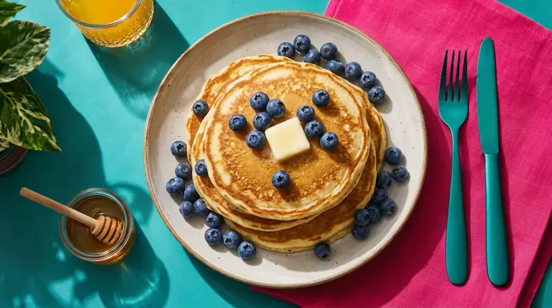
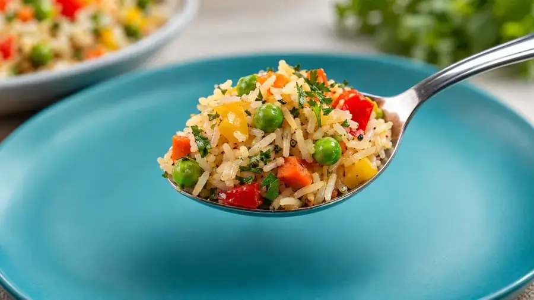
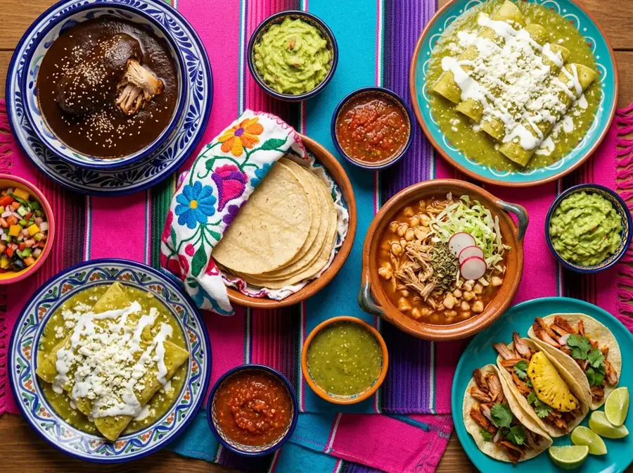
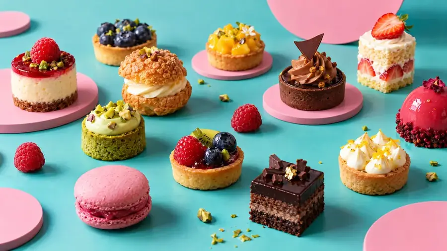
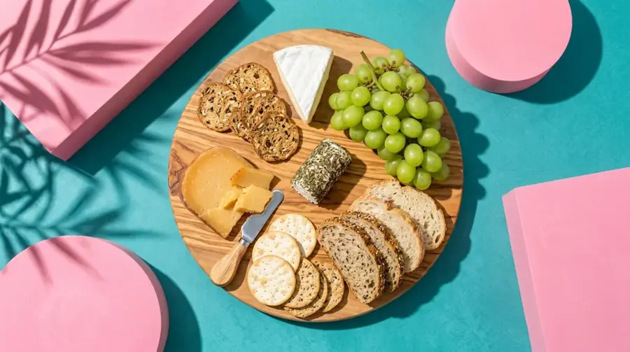
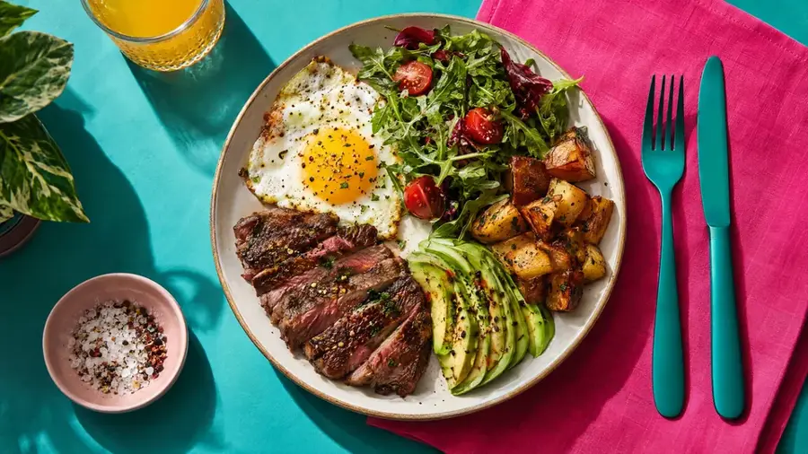

three pancakes · some rice
not: two rices · a bread
There is a table · There are three desserts
an omelet · the menu
WE GO English School · Grammar · · Subtítulos en español (CC) · Example student panel content